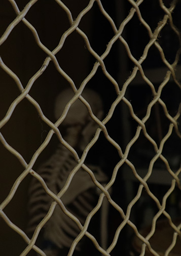

I took this image on the sixth floor of Thomas Hunter Hall. I initially went there to photograph the dance studio which has these beautiful floor-to ceiling gilded windows. Upon heading back to the elevator, I was spooked by this skeleton behind this fence-type wall. I took a quick snap of it, not expecting to use it for this assignment, but I became very interested in playing with it in photoshop when I got home. I feel like making the image darker in tone and playing with the contrast of the fence gave it an eerie feel.